To know about tetromino, it is essential to have an idea about Domino and Trinomino.
Join two squares of size 1cm x 1cm edge to edge. Such formation is called as Domino. When we arrange Domino either horizontally or vertically we get the following shapes (
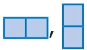
).Similarly, when we join three squares along their edges we get the formation called Trinomino. When we arrange horizontally or vertically we get the following shapes (
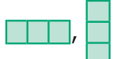
).Is this the only way to join the three squares ? No, we get four different orientations of shape as shown (
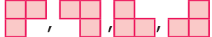
).Try to join four squares either horizontally or vertically as we did for Domino and Trinomino, then we get the following shapes
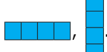
. Is there any other way of joining four squares. Yes, let us learn about them.Situation 1
The teacher divide the students into five groups and gives each group 20 square (of size 1 cm x 1 cm) tokens. Then ask them to form different shapes using the four square tokens and compare the shapes created by all groups. Draw the common shapes on the blackboard.
How many shapes do we get ?
Only five shapes, isn't it?
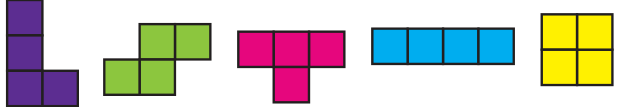
When we rotate these shapes, we get all the other shapes as shown below :
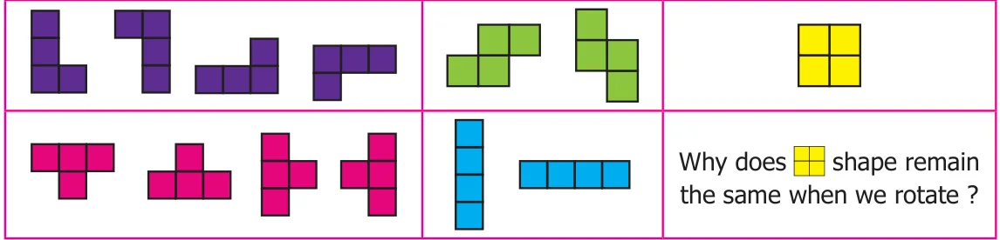
Thus, all the formation of four squares formed by joining edge to edge are called " TETROMINOES " .
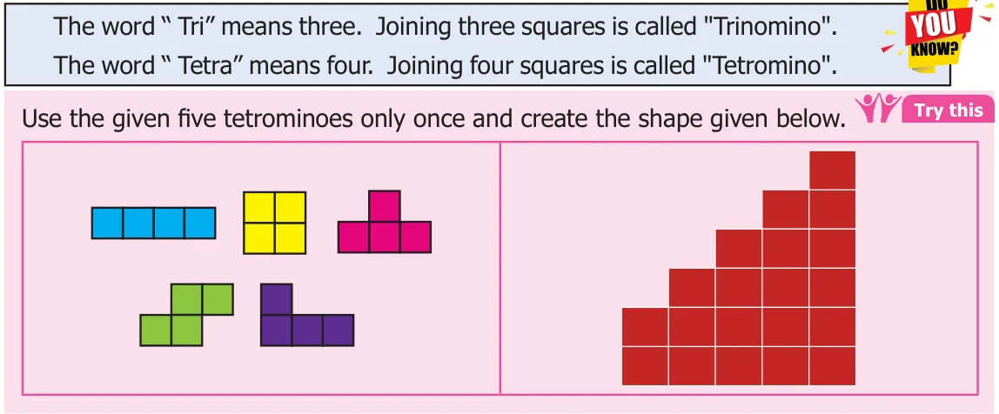
6.2.1 Filling rectangular tiles using Tetrominoes
Situation 2
Can you form the rectangles of same area using the five tetrominoes only once? No, observe the following formations (Fig 6.9 – 6.12) where we have arranged tetrominoes edge to edge and tried to fill in rectangles. The boxes marked X are not filled by a tetromino. Hence the rectangle is incomplete. Also, some squares protrude outside the boundary of the rectangle.
The five tetrominoes together consist of 20 squares. Using 20 squares we can form the rectangles of size \(1 \times 20\), \(20 \times 1\), \(2 \times 10\), \(10 \times 2\), \(4 \times 5\), and \(5 \times 4\).
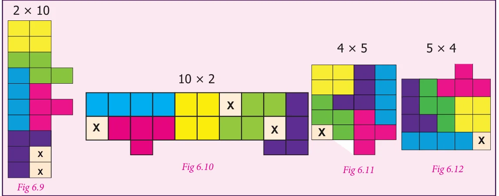
Why we are not able to form rectangular shapes using these tetrominoes only ones?. To know the reason, take the five tetrominoes in the form shown below.
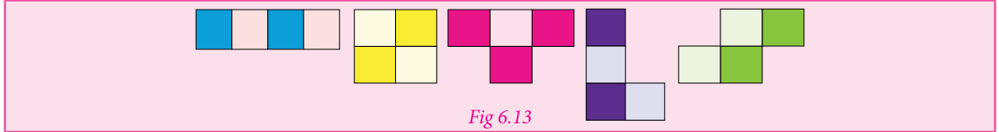
From among the five tetrominoes, in four of them, the number of shaded and unshaded squares are equal. But, in one tetromino
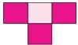
, the shaded and unshaded squares are not equal. Hence, it is impossible to fit the tetrominoes in the rectangle using it only once.However, If we use all the five tetrominoes twice, rectangles of sizes \(5 \times 8\), \(4 \times 10\) and so on. It can be completely filled in, as shown in Fig. 6.14 and Fig.6.15.
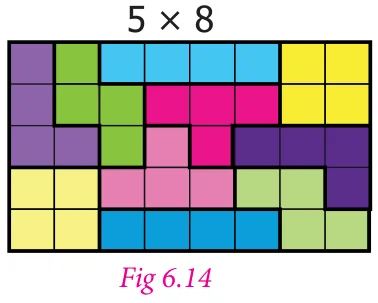
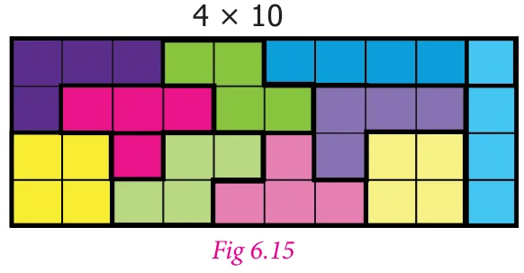
This concept will be useful in many places in real life situation like tiling a floor, packing things in a box and so on.
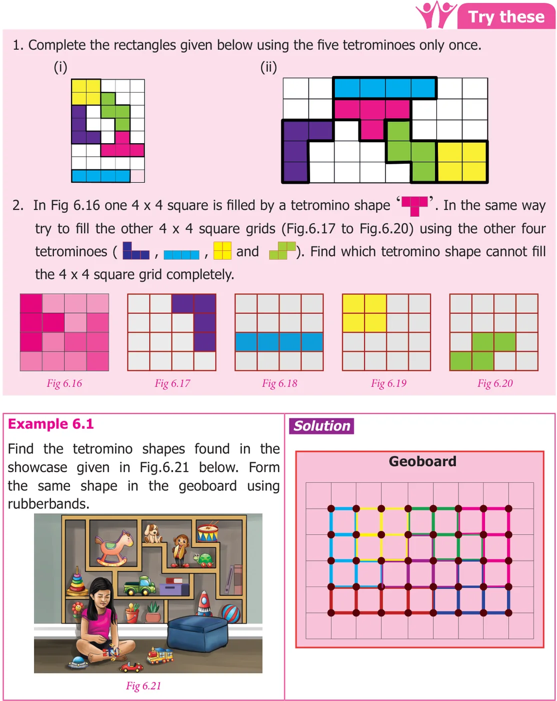
Example 6.2
Raghavan wants to change the front elevation of his house using the tiles made up of tetromino shapes (
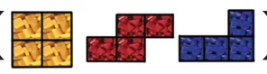
).- How many tetrominoes are there in a tile
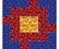
? - If the cost of a square tile is ₹52 then what will be the cost of the tiles that Raghavan buys for the front elevation? (see Fig. 6.22)

Solution
-
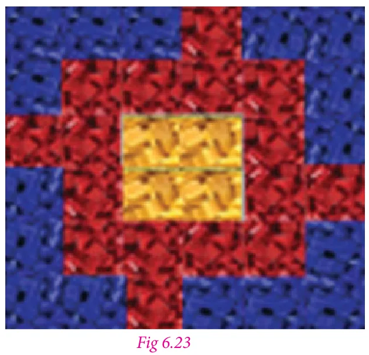
In one tile there are
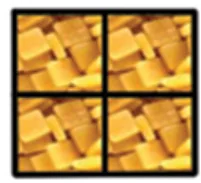
\(= 1\) tetromino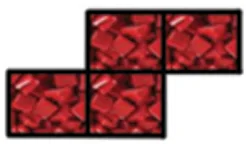
\(= 4\) tetrominoes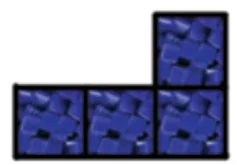
\(= 4\) tetrominoesTherefore, there are nine tetrominoes in a tile.
-
Given, the cost of a tile is ₹52
There are six tiles in the front elevation
Therefore, the total cost \(= 6 \times 52 =\) ₹312